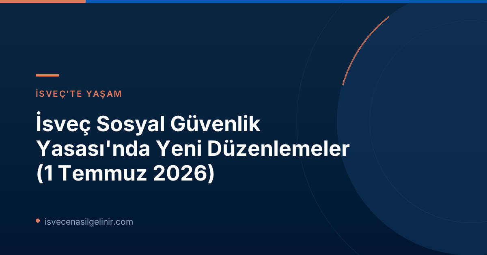

İsveç Sosyal Sigorta Sistemindeki Ana Değişiklikler Nelerdir?
İsveç Riksdagen (Parlamento) tarafından alınan kararla, sosyal güvenlik sisteminde 1 Temmuz 2026 tarihinden itibaren üç önemli yasa değişikliği yürürlüğe girdi. Bu değişikliklerden ikisi, hatalı ödemeleri ve sosyal yardımlardaki suistimalleri azaltmayı amaçlarken, diğeri ise ebeveyn parası başvurularını kolaylaştırmayı hedefliyor. Bu güncellemeler, hem İsveç vatandaşlarını hem de ülkede yaşayan diğer bireyleri doğrudan etkileyecek niteliktedir.
Yanlış Ödemelerde Yeni Yaptırım Ücretleri
Yanlış bilgi verilmesi veya değişen koşulların bildirilmemesi sonucu ortaya çıkan hatalı ödemelerin önüne geçmek amacıyla, Försäkringskassan ve Pensionsmyndigheten (Emeklilik Kurumu) yeni yaptırım ücretleri uygulama yetkisine sahip oldu. Bu düzenleme, refah sistemine olan güveni artırmayı ve kaynakların doğru kullanılmasını sağlamayı hedeflemektedir.
Kimleri İlgilendiriyor?
Bu yaptırım ücreti, sosyal sigorta kapsamında Försäkringskassan veya Pensionsmyndigheten'den yardım alan herkesi ilgilendirmektedir. Özellikle, beyan edilmesi gereken bilgilerde eksiklik veya hata yapan, ya da yaşam koşullarındaki değişiklikleri (iş değişikliği, medeni hal değişikliği, gelir artışı/azalışı vb.) zamanında bildirmeyen kişiler bu yaptırımlarla karşılaşabilir.
Yaptırım Ücreti Ne Kadar?
Yanlış ödemelerden kaynaklanan yaptırım ücretinin hesaplanması belirli kurallara tabidir. Aşağıdaki tabloda detayları bulabilirsiniz:
| Detay | Açıklama |
|---|---|
| Yaptırım Ücreti Oranı | Hatalı ödenen ve geri ödenmesi gereken miktarın %25'i |
| Asgari Yaptırım Ücreti | En az 2.368 SEK (Prisbasbeloppet'in %4'ü) |
Önemli Bilgi: Fiyat Temel Tutarı (Prisbasbeloppet), İsveç sosyal güvenlik sistemindeki birçok hesaplamada referans alınan bir değerdir ve her yıl güncellenir. Bu nedenle, asgari yaptırım ücreti de Prisbasbeloppet'deki değişikliklere göre revize edilebilir.
Amacı ve Beklenen Etkileri
Bu yaptırım ücretinin temel amacı, hatalı ödeme sayılarını azaltmak ve sosyal güvenlik sistemlerinin suistimal edilmesini önlemektir. Riksdag, bu adımla refah devletine olan inancı güçlendirmeyi ve kaynakların gerçekten ihtiyacı olan kişilere ulaşmasını sağlamayı amaçlamaktadır. Vatandaşların doğru ve eksiksiz beyanda bulunma sorumluluğunu artırması beklenmektedir.
Kasıtlı Hatalı Bildirimlerde 3 Yıla Kadar Yardım Kesintisi (Bidragsspärr)
Sosyal sigorta sisteminin kötüye kullanımına karşı daha radikal bir önlem olarak, kasıtlı veya ağır ihmalle hatalı ödemelere neden olan kişilere yönelik yeni bir yaptırım olan "yardım engellemesi" (bidragsspärr) getirildi.
Uygulama Detayları
Bu yeni yaptırım kapsamında, bilinçli olarak veya büyük bir ihmalkarlıkla hatalı ödemelere yol açan kişiler, belirli sosyal yardımlardan geçici olarak men edilebilir. Engelleme süresi, durumun ciddiyetine göre birkaç aydan üç yıla kadar değişebilir. Bu, yalnızca parasal bir yaptırım değil, aynı zamanda belirli haklardan mahrum bırakma anlamına gelir.
Kötüye Kullanımın Önlenmesi
Riksdagen'in bu kararla, sosyal sigorta sisteminin sistematik bir şekilde kötüye kullanılmasını engellemeyi hedeflediği belirtiliyor. Bu yaptırımın, sistemin bütünlüğünü korumak ve dürüst başvuru sahiplerinin haklarını güvence altına almak için önemli bir adım olduğu düşünülmektedir. Bu tür kasıtlı hataların İsveç'teki yaşamınız ve haklarınız üzerinde ciddi sonuçları olabileceğini unutmayın. İsveç vatandaşlığı yolunda ilerleyenler için bu kurallara uymak, İsveç Vatandaşlık Sınavı kadar önemlidir.
Ebeveyn Parası Başvurularında Kolaylık: Ön Bildirim Şartı Kalktı
İsveç sosyal güvenlik sistemindeki en olumlu değişikliklerden biri, ebeveyn parası (föräldrapenning) başvurularında yapılan basitleştirmedir. Bu yeni düzenleme, ebeveynlerin haklarını kullanmalarını kolaylaştırmayı amaçlamaktadır.
Yeni Süreç Nasıl İşleyecek?
1 Temmuz 2026 tarihinden itibaren, ebeveyn izni kullanmak ve ebeveyn parası almak isteyen kişiler için önceden gerekli olan "bildirimde bulunma" şartı kaldırıldı. Artık doğrudan Försäkringskassan'a ebeveyn parası başvurusu yapmak yeterli olacaktır. Bu, bürokratik süreci azaltarak ebeveynlik iznini daha erişilebilir hale getirecek.
Başvuru Sürecinde Nelere Dikkat Edilmeli?
Ön bildirim şartının kalkması süreci basitleştirse de, başvurunun eksiksiz ve doğru yapılması hala büyük önem taşımaktadır. Başvuru formlarının dikkatlice doldurulması, gerekli belgelerin eksiksiz sunulması ve Försäkringskassan'ın talep ettiği tüm bilgilerin doğru bir şekilde iletilmesi hayati öneme sahiptir. Süreçle ilgili güncel bilgilere Försäkringskassan'ın resmi web sitesinden ulaşmanız her zaman tavsiye edilir.
Bu Değişikliklerin Vatandaşlar Üzerindeki Etkileri
Getirilen bu yasa değişiklikleri, İsveç'teki sosyal güvenlik sisteminin daha şeffaf, adil ve sürdürülebilir bir yapıya kavuşmasını hedefliyor. Yanlış beyan ve suistimallerin önüne geçilmesi, kaynakların verimli kullanılmasını sağlarken, ebeveyn parası başvurularının kolaylaştırılması ise ebeveynlerin yaşamını rahatlatacaktır. Vatandaşların bu yeni kurallara uyum sağlaması ve haklarını doğru şekilde kullanması, sistemin sorunsuz işlemesi adına kritik öneme sahiptir.
İsveç Vatandaşları İçin Bilinmesi Gerekenler
İsveç'te yaşayan herkesin, özellikle sosyal güvenlik yardımlarına başvuran veya bu yardımlardan faydalanan herkesin, bu yasa değişiklikleri hakkında bilgi sahibi olması ve Försäkringskassan'dan gelen duyuruları dikkatle takip etmesi gerekmektedir. Hatalı beyanların veya değişen durumları bildirmemenin ciddi yaptırımları olabileceği göz önünde bulundurulmalıdır. Bilgi almak ve haklarınızı öğrenmek için Försäkringskassan'ın resmi kanallarını kullanmanız en doğrusudur.
Bu değişiklikler, İsveç toplumunun sosyal refahını koruma ve geliştirme çabalarının bir parçasıdır. Her zaman güncel bilgilere ulaşmak için resmi kaynakları kontrol etmeyi unutmayın.
Referanslar:
İsveç Göçmenlik ve Sosyal Haklar Hakkında Daha Fazla Bilgi Edinin!
İsveç'teki yaşamınıza dair tüm sorularınız için uzman danışmanlarımızdan destek alın. Sosyal güvenlik haklarınız, oturum izinleri, vatandaşlık süreci ve daha fazlası hakkında güncel ve doğru bilgilere ulaşın.